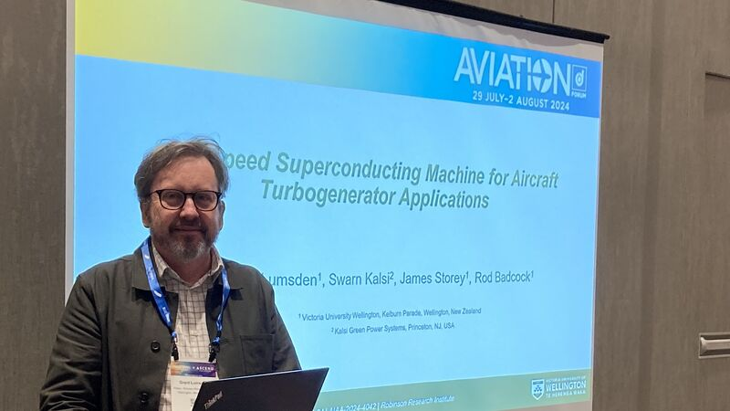

HyFlux Ltd, a pioneering company in advanced propulsion technologies, is proud to announce a strategic partnership with the Paihau-Robinson Research Institute, Victoria University of Wellington, and Wellington UniVentures. This collaboration aims to decarbonise transport, beginning with lightweight aviation motors and propulsion systems, leveraging the potential of cryogenic hydrogen to drive superconducting technologies for sustainable aviation.
One of the coldest, hottest, and most powerful superconductor electric rocket thrusters ever to be tested in space is being built in a hi-tech shed at the bottom of Wainuiomata Hill.
Next stop for the local tech is America, then the International Space Station - then maybe, one day, Mars.
The superconductor magnet and its accompanying thruster is being assembled in Seaview, Lower Hutt. It will be checked in Houston, launched in Florida, and installed on the space station, where it must take its turn to get tested in space for the first time.
Endeavour Fund Success
13 September, Robinson Research Institute
Congratulations to Institute Senior Scientist Dr Simon Granville who has been awarded funding for an Endeavour Research Programme on "Scalable cryogenic memory technology for superconducting and quantum computing" in this year's round. In this project he aims to build prototypes of the cryogenic memory arrays required for the high-performance computers of the future.
The Paihau–Robinson Research Institute at Te Herenga Waka—Victoria University of Wellington is at the forefront of innovative space technology, partnering with global leaders to push the boundaries of what is possible in space exploration. Our state-of-the-art facilities and cutting-edge research are driving significant advancements in propulsion efficiency, radiation shielding on orbit, and re-entry heat shielding designs—crucial components for the next generation of space missions.
Presenting at the Electric Aircraft Technology Symposium
1 August, Robinson Research Institute

High power electric motors and generators are a key piece of the electric aviation puzzle. Institute Principal Project Engineer Dr Grant Lumsden presented at the American Institute of Aeronautics and Astronautics Electric Aircraft Technology Symposium (EATS) in Las Vegas.
There he presented our concept design for a 10 MW partially superconducting generator that can be directly coupled to a gas turbine for hybrid aircraft applications. It breaks through the 10 kW/kg barrier in this power class, and is very straightforward to manufacture, compared to many other proposals.
"Fusion Industry Association chief executive Andrew Holland is confident that at least one of the 45 competing fusion companies will nail it, and the impact will be revolutionary. Holland pays tribute to the innovation coming out of Wellington – an experimental direction called levitated dipole that differs from the more common magnetic confinement or inertial confinement technology. It uses the superconductor innovation of Te Herenga Waka Victoria University’s world-renowned Robinson Research Institute."
PhD Candidate Dhanika Ratnayake stands at the forefront of enhancing wheeled robot stability in rugged terrains, likening his field to "a balancing act where each element must harmonize perfectly to maintain stability."
We're happy to announce that Dr Fiona Stevens McFadden has started in a new role as Deputy Director of the Paihau—Robinson Research Institute. With a career marked by innovative research and a commitment to empowering others, Dr Stevens McFadden brings a dynamic blend of industry expertise and vision to this pivotal role.
Dr Adam Francis is a scientist at the renowned Robinson Research Institute, a research centre within Victoria University that specialises in superconductivity. He's recently joined the KiwiNet Emerging Innovators programme to find out how to bring his innovations to market.
In scientific discovery, Artificial Intelligence (AI) is emerging as a new way to perceive and interpret the vast ocean of data that traditional methods might miss or misinterpret. Sofie Claridge's PhD research applies this transformative capability of AI to the phenomenon known as "quenching" in high-temperature superconducting (HTS) magnets.
Celebrating excellence — Emeritus Professor Bob Buckley
3 May, Victoria University
Throughout his career in material sciences, Emeritus Professor Buckley has focused on studying the behaviour of solid materials including semiconductors, sea ice, magnetic systems, and high-temperature superconductors (HTS). His research examines how these materials conduct electricity without resistance, their optical properties, and their responses to different temperatures.
Engineers and scientists at Victoria University’s Paihau-Robinson Research Institute are currently building a technology demonstration payload that will launch to the International Space Station (ISS) in 2025. The mission is named Hēki - te reo Māori for “egg” - and will be housed on the ISS’ NanoRacks External Platform. Hēki will demonstrate that a High-Temperature Superconducting magnet and its wireless inductive power supply (called a “flux pump”) can survive the journey to space and operate for long durations there. The payload will be returned to Paihau-Robinson for post-flight characterisation at the end of its time in space.
Visit by Professor John Durrell
19 April, Robinson Research Institute
It was our pleasure to host a week-long visit by Professor John Durrell (centre) from the Bulk Superconductivity Group at the University of Cambridge, to share research and identify new opportunities for collaboration.
Atif Islam's pursuit of a PhD in materials engineering at Paihau—Robinson Research Institute exemplifies resilience and passion. Atif's doctoral research focuses on developing an innovative voltage-tuneable magnetoresistive sensor for non-destructive testing of critical infrastructure.
Comprising a diverse and committed team of scientists and engineers, the Institute aims to apply cutting-edge research findings and advanced engineering to innovative technologies. An example of this work is the homopolar superconducting electric motor that has been designed, built and tested at the Institute.